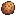

Receitas
Da Vale das Araucárias Wiki
Receitas novas desta versão: Broa de milho e Bolo de fubá, mais a fabricação do Caroço de Butiá. Polenta, churrasco gaúcho e outras 13 receitas existiram nas versões 1.4.0 a 1.5.x e foram retiradas na 1.6.0 (veja Receitas retiradas).
Conteúdo
Receitas novas
| Imagem | Prato | Descrição | Ingredientes | Energia / saúde | Venda | Como aprender |
|---|---|---|---|---|---|---|
| Broa de milho | Pão de fubá, denso e amarelinho. | Farinha de milho (fubá) (1) Leite (qualquer) (1) | 160g | Saloon do Gus, 150g | ||
| Bolo de fubá | Bolo fofo de fubá, bom para acompanhar um café. | Farinha de milho (fubá) (1) Açúcar (1) Ovo (qualquer) (1) | 220g | Saloon do Gus, 250g |
Nenhum dos dois dá bônus temporários. As receitas antigas do jogo não foram alteradas e o fubá não é obrigatório em nada que já existia.
Fabricação
| Imagem | Item | Ingredientes | Como aprender |
|---|---|---|---|
 | Caroço de Butiá | Butiá (1) | Nível 1 de coleta |
Processamento
O mod acrescenta conversões ao moinho, ao barril e ao extrator de óleo. A tabela completa está em Cultivo. A principal é o milho do jogo, que no moinho vira Farinha de milho (fubá), base das duas receitas novas.
Pratos do jogo com nomes regionais
Onze pratos do jogo cujo nome ou descrição citava uma espécie substituída foram adaptados ao nome regional do ingrediente. Ingredientes, efeitos, preços e desbloqueios continuam os do jogo; o mod não troca os sprites desses pratos.
| Imagem | Nome no mod | Original | Ingredientes | Energia / saúde | Efeitos | Venda | Receita | O que mudou |
|---|---|---|---|---|---|---|---|---|
| Lula-costeira Frita | Fried Calamari | Lula-costeira (1) Farinha de trigo (1) Óleo (1) | — | 150g | Carta da Jodi (3+ corações) | Nome | ||
| Piava-surpresa | Carp Surprise | Piava (4) | — | 150g | A Rainha do Molho (TV), 7 de verão do ano 2 | Nome | ||
| Jantar de Grumatã | Salmon Dinner | Grumatã (1) Amaranto (1) Couve (1) | — | 300g | Carta do Gus (3+ corações) | Nome | ||
| Traíra Crocante | Crispy Bass | Traíra (1) Farinha de trigo (1) Óleo (1) | Magnetismo +64 (7 min) | 150g | Carta do Kent (3+ corações) | Nome | ||
| Sopa de Lambari-prata | Trout Soup | Lambari-prata (1) Alga verde (1) | Pesca +1 (4 min 39 s) | 100g | A Rainha do Molho (TV), 14 de outono do ano 1 | Nome | ||
| Enguia-de-lama Frita | Fried Eel | Enguia-de-lama (1) Óleo (1) | Sorte +1 (7 min) | 120g | Carta do George (3+ corações) | Nome | ||
| Enguia-de-lama Picante | Spicy Eel | Enguia-de-lama (1) Pimenta (1) | Sorte +1, Velocidade +1 (7 min) | 175g | Carta do George (7+ corações) | Nome | ||
| Escargô Aruás cobertos de manteiga e cozidos com perfeição. | Escargot | Aruá (1) Alho (1) | Pesca +2 (16 min 47 s) | 125g | Carta do Willy (5+ corações) | Descrição | ||
| Bisque de Cavaco | Lobster Bisque | Cavaco (1) Leite (1) | Pesca +3, Energia máxima +50 (16 min 47 s) | 205g | A Rainha do Molho (TV) ou carta do Willy (9+ corações) | Nome | ||
| Bolinhos de Siri-azul Siri-azul, pão e ovo achatados e fritos até ficarem dourados. | Crab Cakes | Siri-azul (1) Farinha de trigo (1) Ovo (1) Óleo (1) | Velocidade +1, Defesa +1 (16 min 47 s) | 275g | A Rainha do Molho (TV), 21 de outono do ano 2 | Nome e descrição | ||
| Coquetel de Camarão-rosa Um aperitivo suntuoso feito com camarão-rosa fresco. | Shrimp Cocktail | Tomate (1) Camarão-rosa (1) Raiz-forte silvestre (1) | Pesca +1, Sorte +1 (10 min 2 s) | 160g | A Rainha do Molho (TV), 28 de inverno do ano 2 | Nome e descrição |
Dados de ingredientes, efeitos, preços e receitas do jogo base (Stardew Valley 1.6), conferidos na Stardew Valley Wiki. O Escargô mantém o nome do jogo; só a descrição mudou.
Outros pratos que usam itens do mod
Pratos do jogo base que não mudaram de nome, mas pedem peixes ou itens de covo que agora têm nome regional. Os nomes ficam em inglês porque a tradução varia conforme o idioma do jogo.
| Prato (nome original) | Ingredientes |
|---|---|
| Dish O' The Sea | Sardinha-verdadeira (2), Hashbrowns (1) |
| Fish Taco | Bonito-listrado (1), Tortilla (1), Repolho roxo (1), Maionese (1) |
| Baked Fish | Lambari-guaçu (1), Lambari-do-rabo-amarelo (1), Farinha de trigo (1) |
| Chowder | Marisco-branco (1), Leite (1) |
| Fish Stew | Lagostim (1), Mexilhão (1), Caramujinho (1), Tomate (1) |
| Seafoam Pudding | Linguado-branco (1), Traíra-pintada (1), Tinta de lula (1) |
| Lucky Lunch | Pepino-do-mar (1), Tortilla (1), Jazz azul (1) |
| Tom Kha Soup | Coco (1), Camarão-rosa (1), Cogumelo comum (1) |
Receitas retiradas
Retirado Estas 15 receitas existiram no módulo de cultivos e culinária (versões 1.4.0 a 1.5.x) e foram retiradas na versão 1.6.0. Elas não existem na versão atual:
- Polenta
- Polenta com queijo
- Churrasco gaúcho
- Arroz carreteiro
- Barreado
- Pierogi
- Entrevero de pinhão
- Chimarrão
- Pinhão cozido
- Cuca de maçã
- Feijão tropeiro
- Doce de batata-doce
- Quirera com carne suína
- Pirão de peixe
- Aipim frito
Os quatro ingredientes comprados daquela fase (carne bovina, carne suína, charque e farinha de mandioca) também saíram na 1.6.0. Em saves antigos, esses itens aparecem como Error Item.